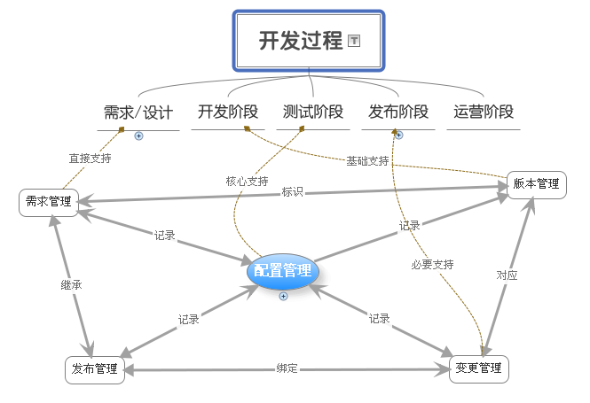
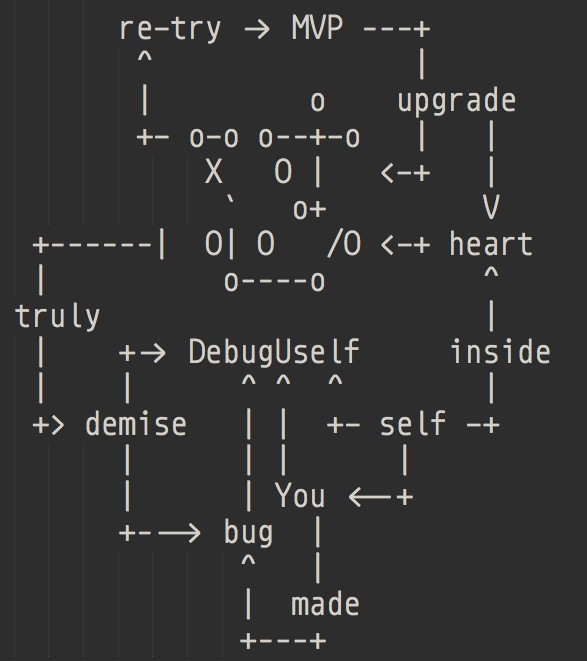

py.101.camp
ch11
190317 2042
CAMP
比来时强
AKA
All Know All
预约
闪电分享
BC
.db
fa1a6ed1
@yishu
很久没见的 BC 但是值得来分享 Err 体验
#190
@XiaoYanWork
方向误判故事
#182
@adi0229
隐藏的老司机, 分享时区问题的通常检验/应对吧
#185
@OMlalala
什么是真正程序员 中译版本?
#189
@doituself
分享模糊的任务分析心得
80c1c197
@tanchangde
引发隐密老坑的理解
#191
@chenmingio
www.chenming.life
嗯哼

ˈriT͟Həm
节奏
rhythm
习惯
8w -> 固化
d0
休整
例蟒/交流/激发/…
d1
破题
规划/解析/窜门/…
d2
探索
方案/方向/办法/…
d3
实践
检验/demo/…
d4
开发
调试/模块/目录/版本/…
d5
发布
测试/部署/数据/…
d6
review
文档/产品化/配置/…

分配
精力/时间/死线…
- 设计:开发:测试:运营
- 4:1:1:4
chaos
真实世界
- 任何领域都有成堆熟练人士
- 想一切准备好再战?
唯快不破
慢慢来, 比较快
成功
是成功者的习惯
自信
需要如何证明?
logging
一切…
依赖?
坚持节奏的动力…
嗯哼

learnning


Kaopulity
靠谱
- Keep
- all
- of
- processes
- usability
依赖?
节奏习惯的惯性…
以及
环境的被动拉动
- the-craft-of-selfteaching
- One has no future if one couldn’t teach themself.
嗯哼

(￣▽￣)
#166
@chenmingio
[共创]“蟒营是什么?” 文案收集
I/O
io.101.camp
是也乎
- 190317 DAMA pub.
- 190316 DAMA ++邀请
- 190311 DAMA ++概念故事
- 190310 DAMA init.
KM

GFM
提问
+5 为什么?
5W1H
框架…
zoom.us
例蠎交流
- 周日 2042
404-101-4441- @huangyu9887 建议统一ID
VCS
玻璃花园
C-C 式串门儿
Activity
- commit
- commit-comments
- issue
- issue-comments
- slack


新业书
~ 转职手册共创
- @chenmingio


IDD
Issue Drive Develop
蠎周刊
嗯哼自己..
知行
合一

pyenv
Python 本地环境
virtualenv
如何求助?
能技
能使
目标对象
就
指定命题
产生
科学兴趣的
技术提问的智慧
作业?
WoW
不得不赞叹…